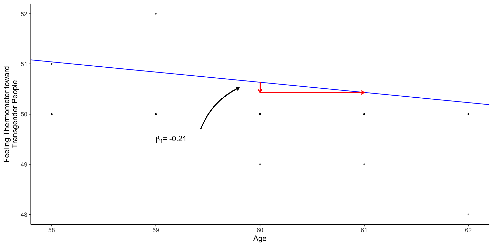

POLS 1600
Casual Inference in
Observational Designs &
Simple Linear Regression
Overview
Overview
- Announcements
- Setup
- Feedback
- Review
- Class plan
Learing goals
Introduce the concept of Directed Acyclic Graphs to describe causal relationships and illustrate potential bias from confounders and colliders
Discuss three approaches to covariate adjustment
- Subclassification
- Matching
- Linear Regression
Begin discussing three research designs to make causal claims with observational data
- Differences-in-Differences (If there’s time)
- Regression Discontinuity Designs
- Instrumental Variables
Annoucements
Sit with your groups (for now)
Updated timeline for final projects next week
Group Assignments
Feedback
What did we like
What did we dislike
Grinding an Iron Pestle into a Needle
Me
- Less is more
- Go slow
- Provide labs/code earlier
- Adapt assignments/policies
You
- Active reading
- Do tutorials
- Review labs before class
- Review comments after class
- Ask for help
- Don’t give up!
Review
Review
Data wrangling
Descriptive Statistics
Levels of understanding
Data visualization
Data Wrangling
Data wrangling
| Skill | Common Commands |
|---|---|
| Setup R | library(), ipak() |
| Load data | read_csv(), load() |
| Get HLO of data | df$x, glimpse(), table(), summary() |
| Transform data | <-, mutate(), ifelse(), case_when() |
| Reshape data | pivot_longer(), left_join() |
| Summarize data numerically | mean(), median(), summarise(), group_by() |
| Summarize data graphically | ggplot(), aes(), geom_ |
Mapping Concepts to Code
Takes time and practice
Don’t be afraid to FAAFO
Don’t worry about memorizing everything.
Statistical programming is necessary to actually do empirical research
Learning to code will help us understand statistical concepts.
Learning to think programmatically and algorithmically will help us tackle complex problems
Descriptive Statiscs
Descriptive statistics
Descriptive statistics help us describe what’s typical of our data
What’s a typical value in our data
How much do our data vary?
As one variable changes how does another change?
Descriptive statistics are:
- Diagnostic
- Generative
Levels of understanding
Levels of understanding in POLS 1600
Conceptual
Practical
Definitional
Theoretical
. . .
Let’s illustrate these different levels of understanding about our old friend the mean
Mean: Conceptual Understanding
A mean is:
A common and important measure of central tendency (what’s typical)
It’s the arithmetic average you learned in school
We can think of it as the balancing point of a distribution
A conditional mean is the average of one variable \(X\), when some other variable, \(Z\) takes a value \(z\)
- Think about the average height in our class (unconditional mean) vs the average height among men and women ([conditional means].{blue})
Mean as a balancing point

Mean: Practical
There are lots of ways to calculate means in R
The simplest is to use the
mean()function- If our data have missing values, we need to to tell
Rto remove them
- If our data have missing values, we need to to tell
mean(df$x, na.rm=T)Conditional Means: Practical
- To calculate a conditional mean we could us a logical index
[df$z == 1]
mean(df$x[df$z == 1], na.rm=T)- If we wanted to a calculate a lot of conditional means we could use the
mean()in combination withgroup_by()andsummarise()
df %>%
group_by(z)%>%
summarise(
x = mean(x, na.rm=T)
)Mean: Definitional
Formally, we define the arithmetic mean of \(x\) as \(\bar{x}\):
\[ \bar{x} = \frac{1}{n}\left (\sum_{i=1}^n{x_i}\right ) = \frac{x_1+x_2+\cdots +x_n}{n} \]
In words, this formula says, to calculate the average of x, we sum up all the values of \(x_i\) from observation \(i=1\) to \(i=n\) and then divide by the total number of observations \(n\)
Mean: Definitional
In this class, I don’t put a lot of weight on memorizing definitions (that’s what Google’s for).
But being comfortable with “the math” is important and useful
Definitional knowledge is a prerequisite for understanding more theoretical claims.
Mean: Theoretical
Suppose I asked you to show that the sum of deviations from a mean equals 0?
\[ \text{Claim:} \sum_{i=1}^n (x_i -\bar{x}) = 0 \]
Mean: Theoretical
Knowing the definition of an arithmetic mean, we could write:
\[ \begin{aligned} \sum_{i=1}^n (x_i -\bar{x}) &= \sum_{i=1}^n x_i - \sum_{i=1}^n\bar{x} & \text{Distribute Summation}\\ &= \sum_{i=1}^n x_i - n\bar{x} & \text{Summing a constant, } \bar{x}\\ &= \sum_{i=1}^n x_i - n\times \left ( \frac{1}{n} \sum_{i=1}^n{x_i}\right ) & \text{Definition of } \bar{x}\\ &= \sum_{i=1}^n x_i - \sum_{i=1}^n{x_i} & n \times \frac{1}{n}=1\\ &= 0 \end{aligned} \]
Mean: Theoretical
Why do we care?
Showing the deviations sum to 0 is another way of saying the mean is a balancing point.
This turns out to be a useful property of means that will reappear throughout the course
If I asked you to make a prediction, \(\hat{x}\) of a random person’s height in this class, the mean would have the lowest mean squared error (MSE \(=\frac{1}{n}\sum (x_i - \hat{x_i})^2)\)
Mean: Theoretical
Occasionally, you’ll read or here me say say things like:
The sample mean is an unbiased estimator of the population mean
In a statistics class, we would take time to prove this.
The sample mean is an unbiased estimator of the population mean
Claim:
Let \(x_1, x_2, \dots x_n\) from a random sample from a population with mean \(\mu\) and variance \(\sigma^2\)
Then:
\[ \bar{x} = \frac{1}{n}\left (\sum_{i=1}^n x_i\right ) \]
is an unbiased estimator of \(\mu\)
\[ E[\bar{x}] = \mu \]
The sample mean is an unbiased estimator of the population mean
Proof:
\[ \begin{aligned} E\left [\bar{x} \right] &= E\left [\frac{1}{n}\left (\sum_{i=1}^n x_i \right) \right] & \text{Definition of } \bar{x} \\ &= \frac{1}{n} \sum_{i=1}^nE\left [ x_i \right] & \text{Linearity of Expectations} \\ &= \frac{1}{n} \sum_{i=1}^n \mu & E[x_i] = \mu \\ &= \frac{n}{n} \mu & \sum_{i=1}^n \mu = n\mu \\ &= \mu & \blacksquare \\ \end{aligned} \]
Levels of understanding
In this course, we tend to emphasize the
Conceptual
Practical
Over
Definitional
Theoretical
In an intro statistics class, the ordering might be reversed.
Trade offs:
- Pro: We actually get to work with data and do empirical research much sooner
- Cons: We substitute intuitive understandings for more rigorous proofs
Data Visualization
Data Visualization
The grammar of graphics
At minimum you need:
dataaestheticmappingsgeometries
Take a sad plot and make it better by:
labelsthemesstatisticscooridnatesfacets- transforming your data before plotting
You are about to be reincarnated: HLO
df$reincarnation<labelled<double>[10]>: You're about to be re-incarnated. Do you want to come back as a:
[1] 1 1 1 7 6 1 6 6 7 1
Labels:
value label
1 Animal/land dweller
6 Bird/air dweller
7 Fish/water dweller
2 Insect
9 Plant
10 Single-celled organismtable(df$reincarnation)
1 6 7
5 3 2 Basic Plot
df %>%
ggplot(aes(x = reincarnation,
fill = reincarnation))+
geom_bar(
stat = "count"
) Use a factor to label and order responses
df %>%
mutate(
# Turn numeric values into factor labels
Reincarnation = forcats::as_factor(reincarnation),
# Order factor in decreasing frequency of levels
Reincarnation = forcats::fct_infreq(Reincarnation),
# Reverse order so levels are increasing in frequency
Reincarnation = forcats::fct_rev(Reincarnation),
# Rename explanations
Why = reincarnation_why
) -> dftable(recode= df$Reincarnation, original = df$reincarnation) original
recode 1 6 7
Single-celled organism 0 0 0
Plant 0 0 0
Insect 0 0 0
Fish/water dweller 0 0 2
Bird/air dweller 0 3 0
Animal/land dweller 5 0 0Revised figure
df %>% # Data
# Aesthetics
ggplot(aes(x = Reincarnation,
fill = Reincarnation))+
# Geometry
geom_bar(stat = "count")+ # Statistic
## Include levels of Reincarnation w/ no values
scale_x_discrete(drop=FALSE)+
# Don't include a legend
scale_fill_discrete(drop=FALSE, guide="none")+
# Flip x and y
coord_flip()+
# Remove lines
theme_classic() -> fig1What creature and why?
Adding labelled values
df %>%
mutate(
# Create numeric id
id = 1:n(),
# Create a label with 3 answers and NA elsewhere
Label = case_when(
id == 10 ~ str_wrap(reincarnation_why[10],30),
id == 4 ~ str_wrap(reincarnation_why[4],30),
id == 7 ~ str_wrap(reincarnation_why[7],30),
TRUE ~ NA_character_
)
) -> df# Calculate totals before calling ggplot
plot_df <- df %>%
group_by(Reincarnation)%>%
summarise(
Count = n(),
Why = na.omit(unique(Label))
) You’re about to be reincarnated:
plot_df %>%
ggplot(aes(x = Reincarnation,
y = Count,
fill = Reincarnation,
label=Why))+
geom_bar(stat = "identity")+ #<<
## Include levels of Reincarnation w/ no values
scale_x_discrete(drop=FALSE)+
# Don't include a legend
scale_fill_discrete(drop=FALSE, guide="none")+
coord_flip()+
labs(x = "",y="",title="You're about to be reincarnated.\nWhat do you want to come back as?")+
theme_classic()+
ggrepel::geom_label_repel(
fill="white",
nudge_y = 1,
hjust = "left",
size=3,
arrow = arrow(length = unit(0.015, "npc"))
)+
scale_y_continuous(
breaks = c(0,2,4,6,8,10,12),
expand = expansion(add =c(0,6))
) -> fig1Data visualization is an iterative process
Data visualization is an iterative process
Good data viz requires lots of data transformations
Start with a minimum working example and build from there
Don’t let the perfect be the enemy of the good enough.
Setup
New packages
This week’s lab we’ll be using the dataverse package to download data on presidential elections
Next week’s lab, we’ll be using the tidycensus package to download census data.
We’ll also need to install a census API to get the data.
Here’s a detailed guide of what we’ll do in class right now.
Install new packages
These packages are easier to install live:
install.packages("dataverse")
install.packages("tidycensus")
install.packages("easystats")
install.packages("DeclareDesign")Census API
Please follow these steps so you can download data directly from the U.S. Census here:
- Install the
tidycensuspackage - Load the installed package
- Request an API key from the Census
- Check your email
- Activate your key
- Install your API key in R
- Check that everything worked
Packages for today
## Pacakges for today
the_packages <- c(
## R Markdown
"kableExtra","DT","texreg",
## Tidyverse
"tidyverse", "lubridate", "forcats", "haven", "labelled",
## Extensions for ggplot
"ggmap","ggrepel", "ggridges", "ggthemes", "ggpubr",
"GGally", "scales", "dagitty", "ggdag", "ggforce",
# Data
"COVID19","maps","mapdata","qss","tidycensus", "dataverse",
# Analysis
"DeclareDesign", "easystats", "zoo"
)
## Define a function to load (and if needed install) packages
#| label = "ipak"
ipak <- function(pkg){
new.pkg <- pkg[!(pkg %in% installed.packages()[, "Package"])]
if (length(new.pkg))
install.packages(new.pkg, dependencies = TRUE)
sapply(pkg, require, character.only = TRUE)
}
## Install (if needed) and load libraries in the_packages
ipak(the_packages) kableExtra DT texreg tidyverse lubridate
TRUE TRUE TRUE TRUE TRUE
forcats haven labelled ggmap ggrepel
TRUE TRUE TRUE TRUE TRUE
ggridges ggthemes ggpubr GGally scales
TRUE TRUE TRUE TRUE TRUE
dagitty ggdag ggforce COVID19 maps
TRUE TRUE TRUE TRUE TRUE
mapdata qss tidycensus dataverse DeclareDesign
TRUE TRUE TRUE TRUE TRUE
easystats zoo
TRUE TRUE Previewing the Lab
Red Covid
Red Covid New York Times, 27 September, 2021
 Red Covid, an Update New York Times, 18 February, 2022
Red Covid, an Update New York Times, 18 February, 2022
Preview of the Lab
Please download Thursday’s lab here
Conceptually, this lab is designed to help reinforce the relationship between linear models like \(y=\beta_0 + \beta_1x\) and the conditional expectation function \(E[Y|X]\).
Substantively, we will explore whether David Leonhardt’s claims about Red Covid the political polarization of vaccines and its consequences
Lab: Questions 1-5: Review
Questions 1-5 are designed to reinforce your data wrangling skills. In particular, you will get practice:
- Creating and recoding variables using
mutate() - Calculating a moving average or rolling mean using the
rollmean()function from thezoopackage - Transforming the data on presidential elections so that it can be merged with the data on Covid-19 using the
pivot_wider()function. - Merging data together using the
left_join()function.
Lab: Questions 6-10: Simple Linear Regression
In question 6, you will see how calculating conditional means provides a simple test of “Red Covid” claim.
In question 7, you will see how a linear model returns the same information as these conditional means (in a sligthly different format)
In question 8, you will get practice interpreting linear models with continuous predictors (i.e. predictors that take on a range of values)
In question 9, you will get practice visualizing these models and using the figures help interpret your results substantively.
Question 10 asks you to play the role of a skeptic and consider what other factors might explain the relationships we found in Questions 6-9. We will explore these factors in next week’s lab.
Before Thursday
The following slides provide detailed explanations of all the code you’ll need for each question.
Please run this code before class on Thursday
We will review this material together at the start of class, but you will spend most of our time on the Questions 6-10
Q1: Setup your workspace
Q1 asks you to setup your workspace
This means loading and, if needed, installing the packages you will use.
## Pacakges for today
the_packages <- c(
## R Markdown
"kableExtra","DT","texreg",
## Tidyverse
"tidyverse", "lubridate", "forcats", "haven", "labelled",
## Extensions for ggplot
"ggmap","ggrepel", "ggridges", "ggthemes", "ggpubr",
"GGally", "scales", "dagitty", "ggdag", "ggforce",
# Data
"COVID19","maps","mapdata","qss","tidycensus", "dataverse",
# Analysis
"DeclareDesign", "easystats", "zoo"
)
## Define a function to load (and if needed install) packages
#| label = "ipak"
ipak <- function(pkg){
new.pkg <- pkg[!(pkg %in% installed.packages()[, "Package"])]
if (length(new.pkg))
install.packages(new.pkg, dependencies = TRUE)
sapply(pkg, require, character.only = TRUE)
}
## Install (if needed) and load libraries in the_packages
ipak(the_packages)Q2 Load the data
To explore Leonhardt’s claims about Red Covid, we’ll need data on:
- Covid-19
- The 2020 Presidential Election
Q2.1 Load the Covid-19 Data
To load data on Covid-19 just run this
load(url("https://pols1600.paultesta.org/files/data/covid.rda"))Q2.2 Load Election Data
Q2.2. asks you to write code that will download data presidential elections from 1976 to 2020 from the MIT Election Lab’s dataverse
- Once you’ve installed the
dataversepackage you should be able to do this:
# Try this code first
Sys.setenv("DATAVERSE_SERVER" = "dataverse.harvard.edu")
pres_df <- dataverse::get_dataframe_by_name(
"1976-2020-president.tab",
"doi:10.7910/DVN/42MVDX"
)
# If the code above fails, comment out and uncomment the code below:
# load(url("https://pols1600.paultesta.org/files/data/pres_df.rda"))Q3 Describe the structure of each dataset
Question 3 asks you to describe the structure of each dataset.
- Specifically, it asks you to get a high level overview of
covidandpres_dfand describe the unit of analysis in each dataset:- Describe substantively what specific, observation each row in the dataset corresponds to
- In covid
coviddataset, the unit of analysis is a state-date
Q3 Describe the structure of each dataset
Here’s some possible code you could use to get a quick HLO of each dataset:
# check names in `covid`
names(covid)
# take a quick look values of each variable
glimpse(covid)
# Look at first few observations for:
# date, administrative_area_level_2,
covid %>%
select(date, administrative_area_level_2) %>%
head()
# Summarize data to get a better sense of the unit of observastion
covid %>%
group_by(administrative_area_level_2) %>%
summarise(
n = n(), # Number of observations for each state
start_date = min(date, na.rm = T),
end_date = max(date, na.rm=T)
) -> hlo_covid_df
hlo_covid_df
# How many unique values of date and state are their:
n_dates <- length(unique(covid$date))
n_states <- length(unique(covid$administrative_area_level_2))
n_dates
n_states
# If we had observations for every state on every date then the number of rows
# in the data
dim(covid)[1]
# Should equal
dim(covid)[1] == n_dates * n_states
# This is what economists would call an unbalanced panel# check names in `pres_df`
names(pres_df)
# take a quick look values of each variable
glimpse(pres_df)
# Unit of analysis is a year-state-candidate
pres_df %>%
select(year, state_po, candidate) %>%
head()
# How many states?
length(unique(pres_df$state_po))
# How many candidates and parties on the ballot in a given election year
pres_df %>%
group_by(year) %>%
summarise(
n_candidates = length(unique(candidate)),
# Look at both party_detailed and party_simplified
n_parties_detailed = length(unique(party_detailed)),
n_parties_simplified = length(unique(party_simplified))
) -> hlo_pres_df
hlo_pres_df
# Look at 2020
# pres_df$candidate[pres_df$year == "2020"]Q4 Recode the data for analysis
Using our understanding of the structure of the data, Q4 asks you to:
- Recode the Covid-19 data like we’ve done before plus
- Calculate rolling means, 7 and 14 day averages
- Reshape, recode, and filter the presidential election data
Q4.1 Recode the Covid-19
This is the same code we’ve used before to create covid_us from covid with the addition of code to calculate a rolling mean or moving average of the number of new cases
# Create a vector containing of US territories
territories <- c(
"American Samoa",
"Guam",
"Northern Mariana Islands",
"Puerto Rico",
"Virgin Islands"
)
# Filter out Territories and create state variable
covid_us <- covid %>%
filter(!administrative_area_level_2 %in% territories)%>%
mutate(
state = administrative_area_level_2
)
# Calculate new cases, new cases per capita, and 7-day average
covid_us %>%
dplyr::group_by(state) %>%
mutate(
new_cases = confirmed - lag(confirmed),
new_cases_pc = new_cases / population *100000,
new_cases_pc_7da = zoo::rollmean(new_cases_pc,
k = 7,
align = "right",
fill=NA )
) -> covid_us
# Recode facemask policy
covid_us %>%
mutate(
# Recode facial_coverings to create face_masks
face_masks = case_when(
facial_coverings == 0 ~ "No policy",
abs(facial_coverings) == 1 ~ "Recommended",
abs(facial_coverings) == 2 ~ "Some requirements",
abs(facial_coverings) == 3 ~ "Required shared places",
abs(facial_coverings) == 4 ~ "Required all times",
),
# Turn face_masks into a factor with ordered policy levels
face_masks = factor(face_masks,
levels = c("No policy","Recommended",
"Some requirements",
"Required shared places",
"Required all times")
)
) -> covid_us
# Create year-month and percent vaccinated variables
covid_us %>%
mutate(
year = year(date),
month = month(date),
year_month = paste(year,
str_pad(month, width = 2, pad=0),
sep = "-"),
percent_vaccinated = people_fully_vaccinated/population*100
) -> covid_us# Calculate new cases, new cases per capita, and 7-day average
covid_us %>%
dplyr::group_by(state) %>%
mutate(
new_cases = confirmed - lag(confirmed),
new_cases_pc = new_cases / population *100000,
new_cases_pc_7day = zoo::rollmean(new_cases_pc,
k = 7,
align = "right",
fill=NA )
) -> covid_usQ4.2 Calculate Rolling Means of Covid Deaths
Q4.2 asks you to create new measures of the 7-day and 14-day averages of new deaths from Covid-19 per 100,000 residents
It encourages you to use the code new_cases_pc_7da as a template
To build your coding skills, try writing this yourself, then comparing it to the code in the next tab:
covid_us %>%
dplyr::group_by(state) %>%
mutate(
new_deaths = deaths - lag(deaths),
new_deaths_pc = new_deaths / population *100000,
new_deaths_pc_7day = zoo::rollmean(new_deaths_pc,
k = 7,
align = "right",
fill=NA ),
new_deaths_pc_14day = zoo::rollmean(new_deaths_pc,
k = 14,
align = "right",
fill=NA )
) -> covid_usRolling Averages
The next slides aren’t necessary for the lab but are designed to illustrate:
- the concept of a rolling mean
- what the code does
- why might prefer rolling averages over daily values
Look at the output of zoo::rollmean()
covid_us %>%
filter(date > "2020-03-05") %>%
select(date,new_cases_pc,new_cases_pc_7day)# A tibble: 52,580 × 4
# Groups: state [51]
state date new_cases_pc new_cases_pc_7day
<chr> <date> <dbl> <dbl>
1 Minnesota 2020-03-06 NA NA
2 Minnesota 2020-03-07 0 NA
3 Minnesota 2020-03-08 0.0177 NA
4 Minnesota 2020-03-09 0 NA
5 Minnesota 2020-03-10 0.0177 NA
6 Minnesota 2020-03-11 0.0355 NA
7 Minnesota 2020-03-12 0.0709 NA
8 Minnesota 2020-03-13 0.0887 0.0329
9 Minnesota 2020-03-14 0.124 0.0507
10 Minnesota 2020-03-15 0.248 0.0836
# ℹ 52,570 more rowsComparing Daily Cases to Rolling Average
The following code illustrates how a 7-day rolling mean smooths (new_cases_pc_7da) over the noisiness of the daily measure
covid_us %>%
filter(date > "2020-03-05",
state == "Minnesota") %>%
select(date,
new_cases_pc,
new_cases_pc_7day)%>%
ggplot(aes(date,new_cases_pc ))+
geom_line(aes(col="Daily"))+
# set y aesthetic for second line of rolling average
geom_line(aes(y = new_cases_pc_7day,
col = "7-day average")
) +
theme(legend.position="bottom")+
labs( col = "Measure",
y = "New Cases Per 100k", x = "",
title = "Minnesota"
) -> fig_covid_mn 
Q4.3 Recode Presidential data
Q4.3 Gives you a long list of steps to recode, reshape, and filter pres_df to produce pres_df2020
Most of this is review but it can seem like a lot.
Walk through the provided code and see if you can map each conceptual step in Q4.3 to its implementation in the code
pres_df %>%
mutate(
year_election = year,
state = str_to_title(state),
# Fix DC
state = ifelse(state == "District Of Columbia", "District of Columbia", state)
) %>%
filter(party_simplified %in% c("DEMOCRAT","REPUBLICAN"))%>%
filter(year == 2020) %>%
select(state, state_po, year_election, party_simplified, candidatevotes, totalvotes
) %>%
pivot_wider(names_from = party_simplified,
values_from = candidatevotes) %>%
mutate(
dem_voteshare = DEMOCRAT/totalvotes *100,
rep_voteshare = REPUBLICAN/totalvotes*100,
winner = forcats::fct_rev(factor(ifelse(rep_voteshare > dem_voteshare,"Trump","Biden")))
) -> pres2020_df
# Check Output:
glimpse(pres2020_df)Rows: 51
Columns: 9
$ state <chr> "Alabama", "Alaska", "Arizona", "Arkansas", "California"…
$ state_po <chr> "AL", "AK", "AZ", "AR", "CA", "CO", "CT", "DE", "DC", "F…
$ year_election <dbl> 2020, 2020, 2020, 2020, 2020, 2020, 2020, 2020, 2020, 20…
$ totalvotes <dbl> 2323282, 359530, 3387326, 1219069, 17500881, 3279980, 18…
$ DEMOCRAT <dbl> 849624, 153778, 1672143, 423932, 11110250, 1804352, 1080…
$ REPUBLICAN <dbl> 1441170, 189951, 1661686, 760647, 6006429, 1364607, 7147…
$ dem_voteshare <dbl> 36.56999, 42.77195, 49.36469, 34.77506, 63.48395, 55.011…
$ rep_voteshare <dbl> 62.031643, 52.833143, 49.055981, 62.395730, 34.320724, 4…
$ winner <fct> Trump, Trump, Biden, Trump, Biden, Biden, Biden, Biden, …Q5 merging data
Q5 asks you to merge the 2020 election data from pres2020_df into covid_us using the common state variable in each dataset using the function left_join()
dim(covid_us)[1] 53678 61dim(pres2020_df)[1] 51 9covid_us <- covid_us %>% left_join(
pres2020_df,
by = c("state" = "state")
)
dim(covid_us) [1] 53678 69Advice for merging
When merging datasets:
- Check the matches in your joining variables
- Make sure the values
stateare the same in each dataset - Check for differences in spelling, punctuation, etc.
- Make sure the values
- Check the dimensions of output of your
left_join()- If there is a 1-1 match the number of rows should be the same before after
# Should be 51 states and DC in each
sum(unique(pres_df$state) %in% covid_us$state)[1] 0# Look at each state variable
## With [] index
pres_df$state[1:5][1] "ALABAMA" "ALABAMA" "ALABAMA" "ALABAMA" "ALABAMA"covid_us$state[1:5][1] "Minnesota" "Minnesota" "Minnesota" "Minnesota" "Minnesota"# Matching is case sensitive
# make pres_df$state title case
## Base R:
pres_df$state <- str_to_title(pres_df$state )
## Tidy R:
pres_df %>%
mutate(
state = str_to_title(state )
) -> pres_df
# Should be 51
sum(unique(pres_df$state) %in% covid_us$state)[1] 50# Find the mismatch:
unique(pres_df$state[!pres_df$state %in% covid_us$state])[1] "District Of Columbia"# Two equivalent ways to fix this mismatch
## Base R: Quick fix to change spelling of DC
pres_df$state[pres2020_df$state == "District Of Columbia"] <- "District of Columbia"
## Tidy R: Quick fix to change spelling of DC
pres_df %>%
mutate(
state = ifelse(test = state == "District Of Columbia",
yes = "District of Columbia",
no = state
)
) -> pres_df
# Problem Solved
sum(unique(pres2020_df$state) %in% covid_us$state)[1] 51Causal Inference
Causal inference is about counterfactual comparisons
Causal inference is about counterfactual comparisons
- What would have happened if some aspect of the world either had or had not been present
Causal Identification
Casual Identification refers to “the assumptions needed for statistical estimates to be given a causal interpretation” Keele (2015)]
- What do we need to assume to make our claims about cause and effect credible
Experimental Designs rely on randomization of treatment to justify their causal claims
Observational Designs require additional assumptions and knowledge to make causal claims
Experimental Designs
Experimental designs are studies in which a causal variable of interest, the treatement, is manipulated by the researcher to examine its causal effects on some outcome of interest
Random assignment is the key to causal identification in experiments because it creates statistical independence between treatment and potential outcomes any potential confounding factors
\[
Y_i(1),Y_i(0),\mathbf{X_i},\mathbf{U_i} \unicode{x2AEB} D_i
\]
Randomization creates credible counterfactual comparisons
If treatment has been randomly assigned, then:
- The only thing that differs between treatment and control is that one group got the treatment, and another did not.
- We can estimate the Average Treatment Effect (ATE) using the difference of sample means
\[ \begin{aligned} E \left[ \frac{\sum_1^m Y_i}{m}-\frac{\sum_{m+1}^N Y_i}{N-m}\right]&=\overbrace{E \left[ \frac{\sum_1^m Y_i}{m}\right]}^{\substack{\text{Average outcome}\\ \text{among treated}\\ \text{units}}} -\overbrace{E \left[\frac{\sum_{m+1}^N Y_i}{N-m}\right]}^{\substack{\text{Average outcome}\\ \text{among control}\\ \text{units}}}\\ &= E [Y_i(1)|D_i=1] -E[Y_i(0)|D_i=0] \end{aligned} \]
Observational Designs
Observational designs are studies in which a causal variable of interest is determined by someone/thing other than the researcher (nature, governments, people, etc.)
Since treatment has not been randomly assigned, observational studies typically require stronger assumptions to make causal claims.
Generally speaking, these assumptions amount to a claim about conditional independence
\[ Y_i(1),Y_i(0),\mathbf{X_i},\mathbf{U_i} \unicode{x2AEB} D_i | K_i \]
- Where after conditioning on \(K_i\), some knowledge about the world and how the data were generated, our treatment is as good as (as-if) randomly assigned (hence conditionally independent)
- Economists often call this assumption of selection on observables
Causal Inference in Observational Studies
To understand how to make causal claims in observational studies we will:
Introduce the concept of Directed Acyclic Graphs to describe causal relationships
Discuss three approaches to covariate adjustment
- Subclassification
- Matching
- Linear Regression
Three research designs for observational data
- Differences-in-Differences
- Regression Discontinuity Designs
- Instrumental Variables
Directed Acyclic Graphs
Two Ways to Describe Causal Claims
In this course, we will use two forms of notation to describe our causal claims.
Potential Outcomes Notation (last lecture)
- Illustrates the fundamental problem of causal inference
Directed Acyclic Graphs (DAGs)
- Illustrates potential bias from confounders and colliders
Directed Acyclic Graphs
Directed Acyclic Graphs provide a way of encoding assumptions about casual relationships
Directed Arrows \(\to\) describe a direct causal effect
Arrow from \(D\to Y\) means \(Y_i(d) \neq Y_i(d^\prime)\) “The outcome ( \(Y\)) for person \(i\) when D happens ( \(Y_i(d)\) ) is different than the the outcome when \(D\) doesn’t happen ( \(Y_i(d^\prime)\) )
No arrow = no effect ( \(Y_i(d) = Y_i(d^\prime)\) )
Acyclic: No cycles. A variable can’t cause itself
Types of variables in a DAG

Blair, Coppock, and Humphreys (2023) (Chap. 6.2)
Causal Explanations Involve:
Your outcomeDA possible cause of YMA mediator or mechanism through whichDeffectsYZAn instrument that can help us isolate the effects of D on `YX2a covariate that may moderate the effect ofDonY
Threats to causal claims/Sources of bias:
X1an observed confounder that is a common cause of bothD&YUan unobserved confounder a common cause of bothD&YKa collider that is a common consequence of bothD&Y
DAGs illustrate two sources of bias:
Confounder bias: Failing to control for a common cause of
DandY(aka Omitted Variable Bias)Collider bias: Controlling for a common consequence (aka Selection Bias1)
Confounding Bias: The Coffee Example
Drinking coffee doesn’t cause lung cancer we might find correlation between them because they share a common cause: smoking.
Smoking is a [confounding] variable, that if omitted will bias our results producing a spurious relationsip
[Adjusting] for [confounders] removes this source of bias
Collider Bias: The Dating Example
Why are attractive people such jerks?
Suppose dating is a function of looks and personality
Dating is a common consequences of looks and personality
Basing our claim off of who we date is an example of selection bias created by controlling for collider

When to control for a variable:

Covariate Adjustment
Covariate Adjustment
Covariate adjustment refers a broad class of procedures that try to make a comparison more credible or meaningful by adjusting for some other potentially confounding factor.
Covariate Adjustment
When you hear people talk about
- Controlling for age
- Conditional on income
- Holding age and income constant
- Ceteris paribus (All else equal)
They are typically talking about some sort of covariate adjustment.
Three approaches to covariate adjustment
- Subclassification
- 👍: Easy to implement and interpret
- 👎: Curse of dimensionality, Selection on observables
- Matching
- 👍: Balance on multiple covariates, Mirrors logic of experimental design
- 👎: Selection on observables, Only provides balance on observed variables, Lot’s of technical details…
- Regression
- 👍: Easy to implement, control for many factors (good and bad)
- 👎: Selection on observables, easy to fit “bad” models
Simple Linear Regression
Understanding Linear Regression
- Conceptual
- Simple linear regression estimates “a line of best fit” that summarizes relationships between two variables
\[ y_i = \beta_0 + \beta_1x_i + \epsilon_i \]
- Practical
- We estimate linear models in R using the
lm()function
- We estimate linear models in R using the
lm(y ~ x, data = df)Understanding Linear Regression
- Technical/Definitional
- Linear regression chooses \(\beta_0\) and \(\beta_1\) to minimize the Sum of Squared Residuals (SSR):
\[\textrm{Find }\hat{\beta_0},\,\hat{\beta_1} \text{ arg min}_{\beta_0, \beta_1} \sum (y_i-(\beta_0+\beta_1x_i))^2\]
- Theoretical
- Linear regression provides a linear estimate of the conditional expectation function (CEF): \(E[Y|X]\)
Conceptual: Linear Regression
Conceptual: Linear Regression
Regression is a tool for describing relationships.
How does some outcome we’re interested in tend to change as some predictor of that outcome changes?
How does economic development vary with democracy?
How does economic development vary with democracy, adjusting for natural resources like oil and gas
Conceptual: Linear Regression
More formally:
\[ y_i = f(x_i) + \epsilon \]
Y is a function of X plus some error, \(\epsilon\)
Linear regression assumes that relationship between an outcome and a predictor can be by a linear function
\[ y_i = \beta_0 + \beta_1 x_i + \epsilon \]
Linear Regression and the Line of Best Fit
- The goal of linear regression is to choose coefficients \(\beta_0\) and \(\beta_1\) to summarizes the relationship between \(y\) and \(x\)
\[ y_i = \beta_0 + \beta_1 x_i + \epsilon \]
To accomplish this we need some sort of criteria.
For linear regression, that criteria is minimizing the error between what our model predicts \(\hat{y_i} = \beta_0 + \beta_1 x_i\) and what we actually observed \((y_i)\)
More on this to come. But first…
Regression Notation
\(y_i\) an outcome variable or thing we’re trying to explain
- AKA: The dependent variable, The response Variable, The left hand side of the model
\(x_i\) a predictor variables or things we think explain variation in our outcome
AKA: The independent variable, covariates, the right hand side of the model.
Cap or No Cap: I’ll use \(X\) (should be \(\mathbf{X}\)) to denote a set (matrix) of predictor variables. \(y\) vs \(Y\) can also have technical distinctions (Sample vs Population, observed value vs Random Variable, …)
\(\beta\) a set of unknown parameters that describe the relationship between our outcome \(y_i\) and our predictors \(x_i\)
\(\epsilon\) the error term representing variation in \(y_i\) not explained by our model.
Linear Regression
- We call this a bivariate regression, because there are only two variables
\[ y_i = \beta_0 + \beta_1 x_i + \epsilon \]
We call this a linear regression, because \(y_i = \beta_0 + \beta_1 x_i\) is the equation for a line, where:
\(\beta_0\) corresponds to the \(y\) intercept, or the model’s prediction when \(x = 0\).
\(\beta_1\) corresponds to the slope, or how \(y\) is predicted to change as \(x\) changes.
Linear Regression
- If you find this notation confusing, try plugging in substantive concepts for what \(y\) and \(x\) represent
- Say we wanted to know how attitudes to transgender people varied with age in the baseline survey from Lab 03.
The generic linear model
\[y_i = \beta_0 + \beta_1 x_i + \epsilon\]
Reflects:
\[\text{Transgender Feeling Thermometer}_i = \beta_0 + \beta_1\text{Age}_i + \epsilon_i\]
Practical: Estimating a Linear Regression
Practical: Estimating a Linear Regression
- We estimate linear regressions in
Rusing thelm()function. lm()requires two arguments:- a
formulaargument of the general formy ~ xread as “Y modeled by X” or below “Transgender Feeling Thermometer (y) modeled by (~) Age (x) - a
dataargument telling R where to find the variables in the formula
- a
load(url("https://pols1600.paultesta.org/files/data/03_lab.rda"))
m1 <- lm(therm_trans_t0 ~ vf_age, data = df)
m1
Call:
lm(formula = therm_trans_t0 ~ vf_age, data = df)
Coefficients:
(Intercept) vf_age
62.8196 -0.2031 The lm() function
The coefficients from lm() are saved in object called m1
m1
Call:
lm(formula = therm_trans_t0 ~ vf_age, data = df)
Coefficients:
(Intercept) vf_age
62.8196 -0.2031 m1 actually contains a lot of information
names(m1) [1] "coefficients" "residuals" "effects" "rank"
[5] "fitted.values" "assign" "qr" "df.residual"
[9] "na.action" "xlevels" "call" "terms"
[13] "model" m1$coefficients(Intercept) vf_age
62.8195994 -0.2030711 Practical: Interpreting a Linear Regression
We can extract the intercept and slope from this simple bivariate model, using the coef() function
# All the coefficients
coef(m1)(Intercept) vf_age
62.8195994 -0.2030711 # Just the intercept
coef(m1)[1](Intercept)
62.8196 # Just the slope
coef(m1)[2] vf_age
-0.2030711 Practical: Interpreting a Linear Regression
The two coefficients from m1 define a line of best fit, summarizing how feelings toward transgender individuals change with age
\[y_i = \beta_0 + \beta_1 x_i + \epsilon\]
\[\text{Transgender Feeling Thermometer}_i = \beta_0 + \beta_1\text{Age}_i + \epsilon_i\]
\[\text{Transgender Feeling Thermometer}_i = 62.82 + -0.2 \text{Age}_i + \epsilon_i\]
Practical: Predicted values from a Linear Regression
Often it’s useful for interpretation to obtain predicted values from a regression.
To obtain predicted vales \((\hat{y})\), we simply plug in a value for \(x\) (In this case, \(Age\)) and evaluate our equation.
For example, might we expect attitudes to differ among an 18-year-old college student and their 68-year-old grandparent?
\[\hat{FT}_{x=18} = 62.82 + -0.2 \times 18 = 59.16\] \[\hat{FT}_{x=65} = 62.82 + -0.2 \times 68 = 49.01\]
Practical: Predicted values from a Linear Regression
We could do this by hand
coef(m1)[1] + coef(m1)[2] * 18(Intercept)
59.16432 coef(m1)[1] + coef(m1)[2] * 68(Intercept)
49.01076 Practical: Predicted values from a Linear Regression
More often we will:
- Make a prediction data frame (called
pred_dfbelow) with the values of interests - Use the
predict()function with our linear model (m1) andpred_df - Save the predicted values to our new column in our prediction data frame
Practical: Predicted values from a Linear Regression
# Make prediction data frame
pred_df <- data.frame(
vf_age = c(18, 68)
)
# Predict FT for 18 and 68 year-olds
predict(m1, newdata = pred_df) 1 2
59.16432 49.01076 # Save predictions to data frame
pred_df$ft_trans_hat <- predict(m1, newdata = pred_df)
pred_df vf_age ft_trans_hat
1 18 59.16432
2 68 49.01076Practical: Visualizing Linear Regression
We can visualize simple regression by:
plotting a scatter plot of the outcome (y-axis) and predictors (x-axis)
overlaying the line defined by
lm()
fig_lm <- df %>%
ggplot(aes(vf_age,therm_trans_t0))+
geom_point(size=.5, alpha=.5)+
geom_abline(intercept = coef(m1)[1],
slope = coef(m1)[2],
col = "blue"
)+
geom_vline(xintercept = 0,linetype = 2)+
xlim(0,100)+
annotate("point",
x = 0, y = coef(m1)[1],
col= "red",
)+
annotate("text",
label = expression(paste(beta[0],"= 62.81" )),
x = 1, y = coef(m1)[1]+5,
hjust = "left",
)+
labs(
x = "Age",
y = "Feeling Thermometer toward\nTransgender People"
)+
theme_classic() -> fig_lm

Technichal: Mechanics of Linear Regression
How did lm() choose \(\beta_0\) and \(\beta_1\)
P: By minimizing the sum of squared errors, in procedure called Ordinary Least Squares (OLS) regression
Q: Ok, that’s not really that helpful…
- What’s an error?
- Why would we square and sum them
- How do we minimize them.
P: Good questions!
What’s an error?
An error, \(\epsilon_i\) is simply the difference between the observed value of \(y_i\) and what our model would predict, \(\hat{y_i}\) given some value of \(x_i\). So for a model:
\[y_i=\beta_0+\beta_1 x_{i} + \epsilon_i\]
We simply subtract our model’s prediction \(\beta_0+\beta_1 x_{i}\) from the the observed value, \(y_i\)
\[\hat{\epsilon_i}=y_i-\hat{y_i}=(Y_i-(\beta_0+\beta_1 x_{i}))\]
To get \(\epsilon_i\)
Why are we squaring and summing \(\epsilon\)
There are more mathy reasons for this, but at intuitive level, the Sum of Squared Residuals (SSR)
Squaring \(\epsilon\) treats positive and negative residuals equally.
Summing produces single value summarizing our models overall performance.
There are other criteria we could use (e.g. minimizing the sum of absolute errors), but SSR has some nice properties
How do we minimize \(\sum \epsilon^2\)
OLS chooses \(\beta_0\) and \(\beta_1\) to minimize \(\sum \epsilon^2\), the Sum of Squared Residuals (SSR)
\[\textrm{Find }\hat{\beta_0},\,\hat{\beta_1} \text{ arg min}_{\beta_0, \beta_1} \sum (y_i-(\beta_0+\beta_1x_i))^2\]
How did lm() choose \(\beta_0\) and \(\beta_1\)
In an intro stats course, we would walk through the process of finding
\[\textrm{Find }\hat{\beta_0},\,\hat{\beta_1} \text{ arg min}_{\beta_0, \beta_1} \sum (y_i-(\beta_0+\beta_1x_i))^2\] Which involves a little bit of calculus. The big payoff is that
\[\beta_0 = \bar{y} - \beta_1 \bar{x}\] And
\[ \beta_1 = \frac{Cov(x,y)}{Var(x)}\] Which is never quite the epiphany, I think we think it is…
The following slides walk you through the mechanics of this exercise. We’re gonna skip through them in class, but they’re there for your reference
How do we minimize \(\sum \epsilon^2\)
To understand what’s going on under the hood, you need a broad understanding of some basic calculus.
The next few slides provide a brief review of derivatives and differential calculus.
Derivatives
The derivative of \(f\) at \(x\) is its rate of change at \(x\)
- For a line: the slope
- For a curve: the slope of a line tangent to the curve
You’ll see two notations for derivatives:
- Leibniz notation:
\[ \frac{df}{dx}(x)=\lim_{h\to0}\frac{f(x+h)-f(x)}{(x+h)-x} \]
- Lagrange: \(f^{\prime}(x)\)
Some useful Facts about Derivatives
Derivative of a constant
\[ f^{\prime}(c)=0 \]
Derivative of a line f(x)=2x
\[ f^{\prime}(2x)=2 \]
Derivative of \(f(x)=x^2\)
\[ f^{\prime}(x^2)=2x \]
Chain rule: y= f(g(x)). The derivative of y with respect to x is
\[ \frac{d}{dx}(f(g(x)))=f^{\prime}(g(x))g^{\prime}(x) \]
The derivative of the “outside” times the derivative of the “inside,” remembering that the derivative of the outside function is evaluated at the value of the inside function.
Finding a Local Minimums
Local minimum:
\[ f^{\prime}(x)=0 \text{ and } f^{\prime\prime}(x)>0 \]

Partial Derivatives
Let \(f\) be a function of the variables \((x, \dots, X_n)\). The partial derivative of \(f\) with respect to \(X_i\) is
\[\begin{align*} \frac{\partial f(x, \dots, X_n)}{\partial X_i}=\lim_{h\to0}\frac{f(x, \dots X_i+h \dots, X_n)-f(x, \dots X_i \dots, X_n)}{h} \end{align*}\]

Minimizing the sum of squared errors
Our model
\[y_i =\beta_0+\beta_1x_{i}+\epsilon_i\]
Finds coefficients \(\beta_0\) and \(\beta_1\) to to minimize the sum of squared residuals, \(\hat{\epsilon}_i\):
\[\begin{aligned} \sum \hat{\epsilon_i}^2 &= \sum (y_i-\beta_0-\beta_1 x_{i})^2 \end{aligned}\]
Minimizing the sum of squared errors
We solve for \(\beta_0\) and \(\beta_1\), by taking the partial derivatives with respect to \(\beta_0\) and \(\beta_1\), and setting them equal to zero
\[\begin{aligned} \frac{\partial \sum \hat{\epsilon_i}^2}{\partial \beta_0} &= -2\sum (y_i-\beta_0-\beta_1 x_{i})=0 & f'(-x^2) = -2x\\ \frac{\partial \sum \hat{\epsilon_i}^2}{\partial\beta_1} &= -2\sum (y_i-\beta_0-\beta_1 x_{i})x_{i}=0 & \text{chain rule} \end{aligned}\]
Solving for \(\beta_0\)
First, we’ll solve for \(\beta_0\), by multiplying both sides by -1/2 and distributing the \(\sum\):
\[\begin{aligned} 0 &= -2\sum (y_i-\beta_0-\beta_1 x_{i})\\ \sum \beta_0 &= \sum y_i - \sum \beta_1 x_{i}\\ N \beta_0 &= \sum y_i -\sum \beta_1 x_{i}\\ \beta_0 &= \frac{\sum y_i}{N} - \frac{\beta_1 \sum x_{i}}{N}\\ \beta_0 &= \bar{y} - \beta_1 \bar{x} \end{aligned}\]
Solving for \(\beta_1\)
Now, we can solve for \(\beta_1\) plugging in \(\beta_0\).
\[\begin{aligned} 0 &= -2\sum [(y_i-\beta_0-\beta_1 x_{i})x_{i}]\\ 0 &= \sum [y_ix_i-(\bar{y} - \beta_1 \bar{x})x_{i}-\beta_1 x_{i}^2]\\ 0 &= \sum [y_ix_i-\bar{y}x_{i} + \beta_1 \bar{x}x_{i}-\beta_1 x_{i}^2] \end{aligned}\]
Solving for \(\beta_1\)
Now we’ll rearrange some terms and pull out an \(x_{i}\) to get
\[\begin{aligned} 0 &= \sum [(y_i -\bar{y} + \beta_1 \bar{x}-\beta_1 x_{i})x_{i}] \end{aligned}\]
Dividing both sides by \(x_{i}\) and distributing the summation, we can isolate \(\beta_1\)
\[\begin{aligned} \beta_1 \sum (x_{i}-\bar{x}) &= \sum (y_i -\bar{y}) \end{aligned}\]
Dividing by \(\sum (x_{i}-\bar{x})\) to get
\[\begin{aligned} \beta_1 &= \frac{\sum (y_i -\bar{y})}{\sum (x_{i}-\bar{x})} \end{aligned}\]
Solving for \(\beta_1\)
Finally, by multiplying by \(\frac{(x_{i}-\bar{x})}{(x_{i}-\bar{x})}\) we get
\[\begin{aligned} \beta_1 &= \frac{\sum (y_i -\bar{y})(x_{i}-\bar{x})}{\sum (\bar{x}-x_{i})^2} \end{aligned}\]
Which has a nice interpretation:
\[\begin{aligned} \beta_1 &= \frac{Cov(x,y)}{Var(x)} \end{aligned}\]
So the coefficient in a simple linear regression of \(Y\) on \(X\) is simply the ratio of the covariance between \(X\) and \(Y\) over the variance of \(X\). Neat!
Theoretical: OLS provides a linear estimate of CEF: E[Y|X]
Linear Regression is a many splendored thing
Timothy Lin provides a great overview of the various interpretations/motivations for linear regression.
A linear projection of \(y\) on the subspace spanned by \(X\beta\)
A linear approximation of the conditional expectation function
Linear Regression is a many splendored thing
Timothy Lin provides a great overview of various interpretations/motivations for linear regression.
A linear projection of \(y\) on the subspace spanned by \(X\beta\)
A linear approximation of the conditional expectation function
The Conditional Expectation Function
Of all the functions we could choose to describe the relationship between \(Y\) and \(X\),
\[ Y_i = f(X_i) + \epsilon_i \]
the conditional expectation of \(Y\) given \(X\) \((E[Y|X])\), has some appealing properties
\[ Y_i = E[Y_i|X_i] + \epsilon \]
The error, by definition, is uncorrelated with X and \(E[\epsilon|X]=0\)
\[ E[\epsilon|X] = E[Y - E[Y|X]|X]= E[Y|X] - E[Y|X] = 0 \]
Of all the possible functions \(g(X)\), we can show that \(E[Y_i|X_i]\) is the best predictor in terms of minimizing mean squared error
\[ E[ (Y - g(Y))^2] \geq E[(Y - E[Y|X])^2] \]
Linear Approximations to the Conditional Expectation Function
- We can then show (in a different class) that linear regression provides the best linear predictor of the CEF
- Chapter 3, of Mostly Harmless Econometrics
- Chapter 4 of Foundations of Agnostic Statistics
- Furthermore, when the CEF is linear, it’s equal exactly to OLS regression

What you need to know about Regression
- Conceptual
- Simple linear regression estimates a line of best fit that summarizes relationships between two variables
\[ y_i = \beta_0 + \beta_1x_i + \epsilon_i \]
- Practical
- We estimate linear models in R using the
lm()function
- We estimate linear models in R using the
lm(y ~ x, data = df)What you need to know about Regression
- Technical/Definitional
- Linear regression chooses \(\beta_0\) and \(\beta_1\) to minimize the Sum of Squared Residuals (SSR):
\[\textrm{Find }\hat{\beta_0},\,\hat{\beta_1} \text{ arg min}_{\beta_0, \beta_1} \sum (y_i-(\beta_0+\beta_1x_i))^2\]
- Theoretical
- Linear regression provides a linear estimate of the conditional expectation function (CEF): \(E[Y|X]\)
Difference-in-Differences
Motivating Example: What causes Cholera?
In the 1800s, cholera was thought to be transmitted through the air.
John Snow (the physician, not the snack), to explore the origins eventunally concluding that cholera was transmitted through living organisms in water.
Leveraged a natural experiment in which one water company in London moved its pipes further upstream (reducing contamination for Lambeth), while other companies kept their pumps serving Southwark and Vauxhall in the same location.
Notation
Let’s adopt a little notation to help us think about the logic of Snow’s design:
\(D\): treatment indicator, 1 for treated neighborhoods (Lambeth), 0 for control neighborhoods (Southwark and Vauxhall)
\(T\): period indicator, 1 if post treatment (1854), 0 if pre-treatment (1849).
\(Y_{di}(t)\) the potential outcome of unit \(i\)
\(Y_{1i}(t)\) the potential outcome of unit \(i\) when treated between the two periods
\(Y_{0i}(t)\) the potential outcome of unit \(i\) when control between the two periods
Causal Effects
The individual causal effect for unit i at time t is:
\[\tau_{it} = Y_{1i}(t) − Y_{0i}(t)\]
What we observe is
\[Y_i(t) = Y_{0i}(t)\cdot(1 − D_i(t)) + Y_{1i}(t)\cdot D_i(t)\]
\(D\) only equals 1, when \(T\) equals 1, so we never observe \(Y_0i(1)\) for the treated units.
In words, we don’t know what Lambeth’s outcome would have been in the second period, had they not been treated.
Average Treatment on Treated
Our goal is to estimate the average effect of treatment on treated (ATT):
\[\tau_{ATT} = E[Y_{1i}(1) - Y_{0i}(1)|D=1]\]
That is, what would have happened in Lambeth, had their water company not moved their pipes
Average Treatment on Treated
Our goal is to estimate the average effect of treatment on treated (ATT):
We we can observe is:
| Pre-Period (T=0) | Post-Period (T=1) | |
|---|---|---|
| Treated \(D_{i}=1\) | \(E[Y_{0i}(0)\vert D_i = 1]\) | \(E[Y_{1i}(1)\vert D_i = 1]\) |
| Control \(D_i=0\) | \(E[Y_{0i}(0)\vert D_i = 0]\) | \(E[Y_{0i}(1)\vert D_i = 0]\) |
Data
Because potential outcomes notation is abstract, let’s consider a modified description of the Snow’s cholera death data from Scott Cunningham:
| Company | 1849 (T=0) | 1854 (T=1) |
|---|---|---|
| Lambeth (D=1) | 85 | 19 |
| Southwark and Vauxhall (D=0) | 135 | 147 |
How can we estimate the effect of moving pumps upstream?
Recall, our goal is to estimate the effect of the the treatment on the treated:
\[\tau_{ATT} = E[Y_{1i}(1) - Y_{0i}(1)|D=1]\]
Let’s conisder some strategies Snow could take to estimate this quantity:
Before vs after comparisons:
Snow could have compared Labmeth in 1854 \((E[Y_i(1)|D_i = 1] = 19)\) to Lambeth in 1849 \((E[Y_i(0)|D_i = 1]=85)\), and claimed that moving the pumps upstream led to 66 fewer cholera deaths.
Assumes Lambeth’s pre-treatment outcomes in 1849 are a good proxy for what its outcomes would have been in 1954 if the pumps hadn’t moved \((E[Y_{0i}(1)|D_i = 1])\).
A skeptic might argue that Lambeth in 1849 \(\neq\) Lambeth in 1854
| Company | 1849 (T=0) | 1854 (T=1) |
|---|---|---|
| Lambeth (D=1) | 85 | 19 |
| Southwark and Vauxhall (D=0) | 135 | 147 |
Treatment-Control comparisons in the Post Period.
Snow could have compared outcomes between Lambeth and S&V in 1954 (\(E[Yi(1)|Di = 1] − E[Yi(1)|Di = 0]\)), concluding that the change in pump locations led to 128 fewer deaths.
Here the assumption is that the outcomes in S&V and in 1854 provide a good proxy for what would have happened in Lambeth in 1954 had the pumps not been moved \((E[Y_{0i}(1)|D_i = 1])\)
Again, our skeptic could argue Lambeth \(\neq\) S&V
| Company | 1849 (T=0) | 1854 (T=1) |
|---|---|---|
| Lambeth (D=1) | 85 | 19 |
| Southwark and Vauxhall (D=0) | 135 | 147 |
Difference in Differences
To address these concerns, Snow employed what we now call a difference-in-differences design,
There are two, equivalent ways to view this design.
\[\underbrace{\{E[Y_{i}(1)|D_{i} = 1] − E[Y_{i}(1)|D_{i} = 0]\}}_{\text{1. Treat-Control |Post }}− \overbrace{\{E[Y_{i}(0)|D_{i} = 1] − E[Y_{i}(0)|D_{i}=0 ]}^{\text{Treated-Control|Pre}}\]
Difference 1: Average change between Treated and Control in Post Period
Difference 2: Average change between Treated and Control in Pre Period
Difference in Differences
\[\underbrace{\{E[Y_{i}(1)|D_{i} = 1] − E[Y_{i}(1)|D_{i} = 0]\}}_{\text{1. Treat-Control |Post }}− \overbrace{\{E[Y_{i}(0)|D_{i} = 1] − E[Y_{i}(0)|D_{i}=0 ]}^{\text{Treated-Control|Pre}}\] Is equivalent to:
\[\underbrace{\{E[Y_{i}(1)|D_{i} = 1] − E[Y_{i}(0)|D_{i} = 1]\}}_{\text{Post - Pre |Treated }}− \overbrace{\{E[Y_{i}(1)|D_{i} = 0] − E[Y_{i}(0)|D_{i}=0 ]}^{\text{Post-Pre|Control}}\]
- Difference 1: Average change between Treated over time
- Difference 2: Average change between Control over time
Difference in Differences
You’ll see the DiD design represented both ways, but they produce the same result:
\[ \tau_{ATT} = (19-147) - (85-135) = -78 \]
\[ \tau_{ATT} = (19-85) - (147-135) = -78 \]
Identifying Assumption of a Difference in Differences Design
The key assumption in this design is what’s known as the parallel trends assumption: \(E[Y_{0i}(1) − Y_{0i}(0)|D_i = 1] = E[Y_{0i}(1) − Y_{0i}(0)|D_i = 0]\)
- In words: If Lambeth hadn’t moved its pumps, it would have followed a similar path as S&V
Parralel Trends

Summary
A Difference in Differences (DiD, or diff-in-diff) design combines a pre-post comparison, with a treated and control comparison
Taking the pre-post difference removes any fixed differences between the units
Then taking the difference between treated and control differences removes any common differences over time
The key identifying assumption of a DiD design is the “assumption of parallel trends”
- Absent treatment, treated and control groups would see the same changes over time.
- Hard to prove, possible to test
Extensions and limitations
- Diff-in-Diff easy to estimate with linear regression
- Generalizes to multiple periods and treatment interventions
- More pre-treatment periods allow you assess “parallel trends” assumption
- Alternative methods
- Synthetic control
- Event Study Designs
- What if you have multiple treatments or treatments that come and go?
- Panel Matching
- Generalized Synthetic control
Applications
Card and Krueger (1994) What effect did raising the minimum wage in NJ have on employment
Abadie, Diamond, & Hainmueller (2014) What effect did German Unification have on economic development in West Germany
Malesky, Nguyen and Tran (2014) How does decentralization influence public services?
References
Blair, Graeme, Alexander Coppock, and Macartan Humphreys. 2023. Research Design in the Social Sciences: Declaration, Diagnosis, and Redesign. Princeton University Press.
Footnotes
Note in practice there’s some slippage/debate/disagreement around this nomenclature↩︎